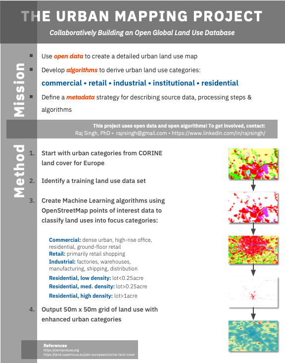

|
The Urban Morphology Project is a collaborative effort to develop an open global urban land use database. Prior efforts at global land use mapping have focused on categorizing land cover by natural features such as forest, agriculture, and water, leaving urban use as a single, homogeneous category. This has been useful for environmental issues and looking at the spread of human settlement, but there has been little work on breaking that urban use category into its constituent parts such as residential, industrial, commercial, etc. Such a database would be of tremendous value to urban scientists and designers in a wide range of fields. Using open data sets in conjunction with the very high resolution satellite imagery (sub-30m) just becoming publicly available, we seek to develop machine learning models tuned to the distinct developmental patterns that exist across the globe that can identify these urban land use forms. |
 |